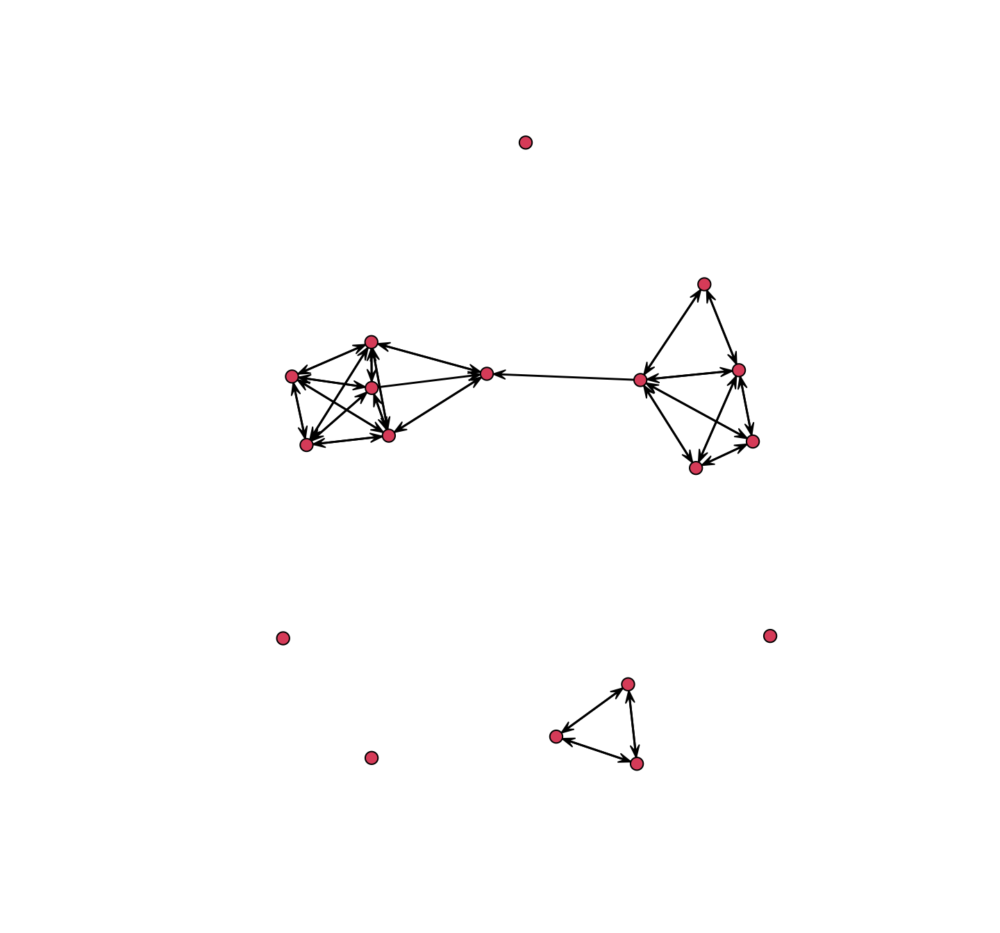

3, Part 2. Dynamic Network Data
This is the second tutorial for Chapter 3, covering the basics of network data in R. The first tutorial covered data management for cross-sectional network data, while this tutorial will walk through the analogous steps for dynamic network data. Here, we assume that a researcher has data on at least two time points and is interested in exploring changes in the network over time. We will cover the basics of handling dynamic network data and calculating summary statistics on dynamic networks.
There are two basic types of dynamic network data. First, the data may be a simple extension of cross-sectional data, where a researcher collects network information, like friendships between students, at multiple time points. The researcher can then ask how friendships change between time T and T+1. The network data thus have a temporal component to it, as ties can be dropped and added, but the time periods are defined in a discrete manner. Alternatively, the data may take the form of continuous-time, streaming data. In this case, the data are time-stamped, with each interaction recorded sequentially. For example, the data may be collected via cell phones (i sends a text message to j), Bluetooth sensors (i and j are physically 'close'), or first hand observations of interactions (i talks to j in a meeting). The key conceptual shift is from relationships (i and j are friends) to specific interactions, or events. We begin the tutorial by exploring the case of discrete longitudinal network data before turning to the case of continuous-time network data.
3.5 Discrete Longitudinal Networks
We will utilize a small school-based network for the first part of this tutorial, covering discrete longitudinal network data. The data were collected by Daniel McFarland and are based on friendships between students in a classroom. The network data were collected at two time points, corresponding to the first and second semester of the school year.
3.5.1 Getting the Data Ready
Lets begin by loading some useful packages. We will work with network and sna, as well as the dynamic extensions of those packages, networkDynamic (a package to manipulate dynamic network data; Butts et al. (2023)) and tsna (a package to calculate network statistics on dynamic networks; Bender-deMoll and Morris (2021)). We will not make use of igraph in this tutorial.
library(network)
library(sna)
library(networkDynamic)
library(tsna)Let's go ahead and walk through an example where we construct a dynamic network object, which can then be used as input to other functions (e.g., plotting functions). In the case of discrete-time data, we construct our dynamic network object by creating separate networks for each time period of interest and then putting the constructed networks together in a single object.
We begin by reading in the data, starting with the semester 1 edgelist. In reading in the data, we set colClasses to "character". We want the columns in the edgelist read in as character values because the sender and receiver ids in the edgelist are labels for the nodes, and thus cannot be interpreted as numeric values. We read in the data from a URL (defined in the first line below).
url1 <- "https://github.com/JeffreyAlanSmith/Integrated_Network_Science/raw/master/data/class237_sem1_edgelist.txt"
sem1_edgelist <- read.table(file = url1, header = T, colClasses = "character")head(sem1_edgelist)## sender receiver
## 1 113214 121470
## 2 113214 125522
## 3 113214 149552
## 4 113214 122728
## 5 113214 122706
## 6 115909 127535We see the ids of the senders and receivers of friendship ties. An edge exists between i->j if i nominated j as a friend. Thus, 113214 nominated 121470 as a friend. Note that the values in the edgelist (113214, 121470, etc.) have no inherent meaning, and are only useful in identifying each node.
Lets also read in the attribute file, containing nodal characteristics.
url2 <- "https://github.com/JeffreyAlanSmith/Integrated_Network_Science/raw/master/data/class237_sem1_attributes.txt"
sem1_attributes <- read.table(file = url2, header = T)Let's take a look at some of the main variables.
sem1_attributes[, c("ids", "sem_id", "expected_grade", "like_subject")]## ids sem_id expected_grade like_subject
## 1 113214 1 4 4
## 2 115909 1 4 3
## 3 121470 1 3 2
## 4 122706 1 4 3
## 5 122710 1 4 2
## 6 122714 1 4 3
## 7 122723 1 4 2
## 8 122724 1 3 2
## 9 122726 1 4 3
## 10 122728 1 4 2
## 11 122732 1 4 3
## 12 122734 1 4 3
## 13 125522 1 4 3
## 14 125567 1 4 4
## 15 126359 1 4 4
## 16 127535 1 4 3
## 17 128033 1 4 3
## 18 129483 1 3 2
## 19 138473 1 4 2
## 20 139163 1 4 1
## 21 140271 1 4 4
## 22 141006 1 4 3
## 23 144882 1 3 2
## 24 149552 1 4 3
## 25 151812 1 4 2ids = id of node; sem_id = semester where data comes from, 1 or 2; expected_grade: D = 1 C = 2 B = 3 A = 4; like_subject: 1-4 scale, with 1 = strong dislike to 4 = like it a lot.
It will be useful to have the attribute file ordered from low to high in terms of the ids.
sem1_attributes <- sem1_attributes[order(sem1_attributes$ids), ]Note that the first column is the ids of the nodes, and must be the same class as the columns of the edgelist, here character.
sem1_attributes$ids <- as.character(sem1_attributes$ids)With our attribute and edgelist objects together, we can now go ahead and construct the network for semester 1, just like in the previous tutorial.
sem1_net <- network(x = sem1_edgelist, directed = T, vertices = sem1_attributes)It is sometimes easier to take the labels off the edgelist before constructing the network (e.g., we did not want to have to deal with tracking the labels in the output). We will demonstrate how to do this with our semester 1 edgelist, although we will not make use of the relabeled edgelist in our analysis. The basic idea is to transform the edgelist into one without labels, where the ids of the nodes are numeric, running from 1 to N, where N is equal to the number of nodes in the network. We will write a little function to make this task easier. The arguments are edgelist (the edgelist of interest, assumed to be a two column data frame of sender and receiver) and ids (the ids of the nodes in the network).
edgelist_relabel_function <- function(edgelist, ids){
edgelist_simple <- data.frame(sender = as.numeric(factor(edgelist[, 1],
levels = ids)),
receiver = as.numeric(factor(edgelist[, 2],
levels = ids)))
return(edgelist_simple)
}And just for the sake of demonstration, let's create the simplified edgelist, without labels. We will set edgelist to the semester 1 edgelist and ids to the ids from the attribute data frame.
sem1_edgelist_nolabel <- edgelist_relabel_function(edgelist = sem1_edgelist,
ids = sem1_attributes$ids)head(sem1_edgelist_nolabel)## sender receiver
## 1 1 3
## 2 1 13
## 3 1 24
## 4 1 10
## 5 1 4
## 6 2 16We can see that the edgelist has been recoded to numbers running from 1 to 25 (the size of the network). For example, 1 (113214) is friends with 3 (121470). This is the same as above, just relabeled.
Now, let's go ahead and construct the second semester network.
url3 <- "https://github.com/JeffreyAlanSmith/Integrated_Network_Science/raw/master/data/class237_sem2_edgelist.txt"
sem2_edgelist <- read.table(file = url3, header = T, colClasses = "character")
url4 <- "https://github.com/JeffreyAlanSmith/Integrated_Network_Science/raw/master/data/class237_sem2_attributes.txt"
sem2_attributes <- read.table(file = url4, header = T)
sem2_attributes <- sem2_attributes[order(sem2_attributes$ids), ]
sem2_attributes$ids <- as.character(sem2_attributes$ids)
sem2_net <- network(x = sem2_edgelist, directed = T, vertices = sem2_attributes)As this is over time data, we need to be careful about the changing composition of the network, where nodes can come and go over time. Some students in semester 1 may not be in the class in semester 2 (and vice versa). For this example, we will keep all nodes in the constructed networks, even if they were not in the class for both semesters. This means that the semester 1 network need not have the same set of nodes as the semester 2 network. Alternatively, we could remove nodes from the networks that were not present in both semesters. It is also important to note that the attributes of the nodes are measured twice, once for each semester. Thus, there can be change over time for nodal attributes, like expected grade.
3.5.2 Constructing networkDynamic Objects
We now have two network objects, one for each semester. The next task is to put the two networks together as a networkDynamic object, which is the dynamic version of a network object. networkDynamic objects are useful as they can be used to calculate various statistics, produce network movies (see Chapter 5) and serve as input to statistical models (see Chapter 13, Part 2).
The main function is networkDynamic(). There are a number of ways to specify the input network data. With discretely observed longitudinal data, we can use a list of networks as the main input. The list is simply the network objects, in sequential order.
net_list <- list(sem1_net, sem2_net)We can now go ahead and create the networkDynamic object with the network list as input. We will also set vertex.pid to "vertex.names" (the name of the vertex attribute housing the ids). This ensures that all nodes present in at least one period will be included in the constructed object, with a unique id attached to them. Setting vertex.pid is particularly useful if there are nodes coming in and out of the network across time, as in this case. Finally, we set create.TEAs to T, telling the function to create time varying vertex attributes for each attribute found on the input networks. This is useful as it automatically creates vertex attributes based on the input networks, while allowing the values to change across time.
net_dynamic_class <- networkDynamic(network.list = net_list,
vertex.pid = "vertex.names",
create.TEAs = T)net_dynamic_class## NetworkDynamic properties:
## distinct change times: 3
## maximal time range: 0 until 2
##
## Dynamic (TEA) attributes:
## Vertex TEAs: cls_id.active
## course_challenging.active
## expected_grade.active
## had_teacher_before.active
## like_subject.active
## like_teacher.active
## sem_id.active
##
## Includes optional net.obs.period attribute:
## Network observation period info:
## Number of observation spells: 1
## Maximal time range observed: 0 until 2
## Temporal mode: discrete
## Time unit: step
## Suggested time increment: 1
##
## Network attributes:
## vertices = 26
## directed = TRUE
## hyper = FALSE
## loops = FALSE
## multiple = FALSE
## bipartite = FALSE
## vertex.pid = vertex.names
## net.obs.period: (not shown)
## total edges= 165
## missing edges= 0
## non-missing edges= 165
##
## Vertex attribute names:
## active cls_id.active course_challenging.active expected_grade.active had_teacher_before.active like_subject.active like_teacher.active sem_id.active vertex.names
##
## Edge attribute names:
## activeThe networkDynamic object has 26 vertices (nodes present in at least one period) and 165 edges (i is friends with j in at least one period). Note that start time (or onset) is set to 0 and that the end time (or terminus) is set to 2, defined as the period where no further change is recorded. Thus, for a network with two discretely observed time periods, the first network defines the ties existing during time period 0 (here sem1_net) while the second network defines the ties existing during time period 1 (here sem2_net). We also see a number of Dynamic (TEA) time varying attributes, like expected_grade, that are measured at our two time points. Note that we can add fixed attributes to the object (that do not change over time) using the set.vertex.attribute() function.
Let's take a look at the object as a data frame.
net_dat_class <- as.data.frame(net_dynamic_class)head(net_dat_class)## onset terminus tail head onset.censored terminus.censored duration edge.id
## 1 0 1 1 3 FALSE FALSE 1 1
## 2 0 2 1 13 FALSE FALSE 2 2
## 3 0 2 1 25 FALSE FALSE 2 3
## 4 0 1 1 10 FALSE FALSE 1 4
## 5 0 2 1 4 FALSE FALSE 2 5
## 6 0 2 2 16 FALSE FALSE 2 6Each row is an edge spell, defining the duration of the i->j edge. The main columns are: onset, the point where the relationship started; terminus, when the relationship ended (or the end of the recorded time points); tail (sender) and head (receiver) of the edge; duration, showing how long the relationship lasted and edge.id, a unique identifier for that edge. For example, node 1 sends an edge to node 3 in period 0 (onset), but not in period 1 (duration is thus equal to 1). This means 1->3 was in the semester 1 network but not the semester 2 network. On the other hand, node 1 sends an edge to node 13 in period 0 (onset) and this lasts to the end of the observation period (duration = 2). The 1->13 edge was thus in the semester 1 network and the semester 2 network. An edge formed in semester 2 would have onset set to 1, terminus equal to 2, and duration equal to 1.
We can extract other useful information from the networkDynamic object. For example, we can extract the ids of the nodes using a get.vertex.pid() function. Here we look at the first five ids.
get.vertex.pid(net_dynamic_class)[1:5]## [1] "113214" "115909" "121470" "122706" "122710"Thus, node 1 is 113214, node 2 is 115909, and so on. This is useful in interpreting output, such as the edge spells printed above (i.e., we can determine which nodes are involved in each edge).
We can also extract the activity of the nodes, showing if they are present in a given period. Here we use a get.vertex.activity() function. We set as.spellList to T, to output the results as a data frame.
activity_data <- get.vertex.activity(net_dynamic_class, as.spellList = T)head(activity_data)## onset terminus vertex.id onset.censored terminus.censored duration
## 1 0 2 1 FALSE FALSE 2
## 2 0 2 2 FALSE FALSE 2
## 3 0 2 3 FALSE FALSE 2
## 4 0 2 4 FALSE FALSE 2
## 5 0 2 5 FALSE FALSE 2
## 6 0 2 6 FALSE FALSE 2The output is similar to the edge spells data frame, but here the focus is on the nodes. We can see that node 1 (for example) is in both semesters (duration = 2). Let's see if any nodes are not in both semesters (duration less than 2):
activity_data[activity_data$duration < 2, ]## onset terminus vertex.id onset.censored terminus.censored duration
## 14 0 1 14 FALSE FALSE 1
## 17 1 2 17 FALSE FALSE 1We can see that two nodes are not present in both semesters. Node 14 was in semester 1 but not semester 2 (onset = 0 and terminus = 1), while node 17 was in semester 2 but not semester 1 (onset = 1). Overall, there are 26 nodes, with 24 in both semesters, 1 in semester 1 only and 1 in semester 2 only (thus 25 in each semester).
3.5.3 Summary Statistics
At this point, we are in a position to use our networkDynamic object. Here, we will cover the basics of calculating summary statistics.
We will make use of the tSnaStats() function to calculate our summary statistics. This is a wrapper for using sna functions on networkDynamic objects. With sna functions, we can calculate things like density, distance and centrality scores. tSnaStats() has the following arguments:
- nd = networkDynamic object
- snafun = function of interest
- start = optional input specifying when to begin evaluation
- end = optional input specifying when to end evaluation
- time.interval = time between evaluations to be printed
- aggregate.dur = time period to bin (or collapse) network when calculating statistic
Our networkDynamic object is simple, consisting of just two discrete networks, so we do not need to be as explicit about the time.interval or aggregate.dur values. Here we calculate density (using the gden() function in sna) for our semester 1 and semester 2 networks:
tSnaStats(nd = net_dynamic_class, snafun = "gden")## Time Series:
## Start = 0
## End = 2
## Frequency = 1
## Series 1
## [1,] 0.160
## [2,] 0.185
## [3,] NAThis is the same as calculating density on each network separately.
gden(sem1_net)## [1] 0.16gden(sem2_net)## [1] 0.185Note that the tSnaStats() function does not (at the moment) work so well for node-level measures, like indegree centrality, when there are nodes coming in and out of the network across time. We can still calculate this, however, by calculating centrality on each network separately. The only trick is to match the values in semester 1 to semester 2, as the order of the nodes will not necessarily be the same (as some nodes present in semester 1 will no longer be present in semester 2). Let's first calculate indegree centrality for the first semester, creating a data frame with the first column as the ids and the second column as the centrality score. With the sna package, the function is degree() and we set cmode to "indegree" to get the right calculation.
ids_sem1 <- get.vertex.attribute(sem1_net, "vertex.names")
indegree_sem1 <- degree(sem1_net, cmode = "indegree")
indegree_dat1 <- data.frame(ids = ids_sem1, indegree_sem1 = indegree_sem1)head(indegree_dat1)## ids indegree_sem1
## 1 113214 9
## 2 115909 2
## 3 121470 6
## 4 122706 6
## 5 122710 5
## 6 122714 3And now for semester 2:
ids_sem2 <- get.vertex.attribute(sem2_net, "vertex.names")
indegree_sem2 <- degree(sem2_net, cmode = "indegree")
indegree_dat2 <- data.frame(ids = ids_sem2, indegree_sem2 = indegree_sem2)And now, let's use a merge() function to put together the two data frames. We set by to "ids" to merge based on the ids variable. We set all to T to include observations that were not in both semesters.
indegree_dat <- merge(indegree_dat1, indegree_dat2, by = "ids", all = T)indegree_dat## ids indegree_sem1 indegree_sem2
## 1 113214 9 7
## 2 115909 2 4
## 3 121470 6 4
## 4 122706 6 5
## 5 122710 5 8
## 6 122714 3 3
## 7 122723 6 7
## 8 122724 2 3
## 9 122726 3 4
## 10 122728 3 1
## 11 122732 4 4
## 12 122734 3 4
## 13 125522 3 5
## 14 125567 4 NA
## 15 126359 1 2
## 16 127535 6 4
## 17 127761 NA 6
## 18 128033 2 5
## 19 129483 2 6
## 20 138473 3 2
## 21 139163 3 5
## 22 140271 4 1
## 23 141006 1 9
## 24 144882 5 4
## 25 149552 5 1
## 26 151812 5 7We can see that 125567 received 4 friendship nominations in semester 1 but was not present in semester 2 (this corresponds to node 14 in our networkDynamic object). 127761, in contrast, was not present in semester 1 but received 6 nominations in semester 2 (node 17 in our networkDynamic object). The remaining nodes were present in both semesters and we can compare their indegree across time.
3.6 Continuous-Time Networks
We now turn to the case where a researcher has time-stamped, streaming network data. Here, we shift our focus away from discrete networks observed at different time points and towards a series of events observed in real time. We will cover network construction and summary statistics for continuous-time dynamic network data. Much of this is an extension of the discrete-time case, but there are important differences and complications that arise. We are particularly concerned about measuring the continuous-time data at different levels of aggregation, and what that tells us about the network structure and dynamics.
3.6.1 Getting the Data Ready
Our data are based on streaming interaction data collected by Daniel McFarland on students in classrooms. Time-stamped interactions in each classroom were recorded, with information on the 'sender' and 'receiver' of the interaction, as well as the nature of the interaction. Interactions could be social or task-based, for example. Data were collected across a large number of classrooms and days. Here we consider one classroom on a single day.
We will begin by creating a dynamic network object based on our classroom interaction data. This will serve as the main inputs to the dynamic network visualization (see Chapter 5) and measurement functions. As above, we will make use of the networkDynamic() function. In this case, however, the inputs will look a little different. Here, we do not have a list of discrete networks. Instead, we construct the networkDynamic object based on two main inputs: an edge spells data frame and a vertex spells data frame.
Let's begin by reading in the edge spells data frame. This is a data set reporting on the social interactions, i.e. talking, between individuals in the classroom.
url5 <- "https://github.com/JeffreyAlanSmith/Integrated_Network_Science/raw/master/data/example_edge_spells.csv"
edge_spells <- read.csv(file = url5)Here we take a look at the first six rows of the data.
head(edge_spells)## start_time end_time send_col receive_col
## 1 0.143 0.143 11 2
## 2 0.286 0.286 2 11
## 3 0.429 0.429 2 5
## 4 0.571 0.571 5 2
## 5 0.714 0.714 9 8
## 6 0.857 0.857 8 9The edge spells data frame describes the start and end times for each observed edge. The first column is the start time of the edge (here interaction between i and j), the second column is the end time, the third column is the sender and the fourth column is the receiver. The time is recorded in standardized minutes. For example, we can see that the first social interaction in this class period involved node 11 talking to node 2, while the second interaction, happening almost immediately afterward, involved node 2 responding to node 11. Note that the events are ordered sequentially. In this case we treat the start and end time as the same (as interactions were very short) but in other cases we might have clear durations. For example, i and j may be sexual partners from period 1 to period 3, i and k may be partners from period 4 to 5 and i and j may be partners again from 6 to 7.
Edges can be in the data frame multiple times, as i may talk to j at different time points during the class. For example, let's look at all of the times that node 11 talks to node 2.
edge_spells[edge_spells$send_col == 11 & edge_spells$receive_col == 2, ]## start_time end_time send_col receive_col
## 1 0.143 0.143 11 2
## 110 19.000 19.000 11 2
## 119 22.289 22.289 11 2
## 159 31.333 31.333 11 2
## 180 36.080 36.080 11 2We also need to read in a vertex spells data frame, showing how nodes move in and out of the network.
url6 <- "https://github.com/JeffreyAlanSmith/Integrated_Network_Science/raw/master/data/example_vertex_spells.csv"
vertex_spells <- read.csv(file = url6)head(vertex_spells)## start_time end_time id
## 1 0 43 1
## 2 0 43 2
## 3 0 43 3
## 4 0 43 4
## 5 0 43 5
## 6 0 43 6The first column is the start time for the node (when they come into the network) and the second column is the end time for the node (when they leave, or are no longer present, in the network). Here we set the start time to 0 for all nodes (as everyone is present for the whole time period) and the end time as the end of the class period. The last column is the id of the nodes.
3.6.2 Constructing networkDynamic Objects
Now, we use the networkDynamic() function to create our dynamic network. The main arguments are vertex.spells and edge.spells. We use the objects read in above as inputs.
net_dynamic_interactions <- networkDynamic(vertex.spells = vertex_spells,
edge.spells = edge_spells)Note that the size of the base network is assumed to be equal to the maximum vertex id value found in the edge spells data frame. Alternatively, we could include a base.net argument to set some of the basic properties (like size) of the network in question.
Let's take a look at the networkDynamic object.
net_dynamic_interactions## NetworkDynamic properties:
## distinct change times: 229
## maximal time range: 0 until 43
##
## Includes optional net.obs.period attribute:
## Network observation period info:
## Number of observation spells: 1
## Maximal time range observed: 0 until 43
## Temporal mode: continuous
## Time unit: unknown
## Suggested time increment: NA
##
## Network attributes:
## vertices = 18
## directed = TRUE
## hyper = FALSE
## loops = FALSE
## multiple = FALSE
## bipartite = FALSE
## net.obs.period: (not shown)
## total edges= 48
## missing edges= 0
## non-missing edges= 48
##
## Vertex attribute names:
## active vertex.names
##
## Edge attribute names:
## activeWe can see that the time periods range from 0 to 43 minutes. We also see a network summary with 18 vertices and 48 edges. Those 48 edges correspond to the network formed from any interaction over the entire time period (so i->j exists if i talked to j at all during the class).
Now that we have our networkDynamic object together, we can go ahead and summarize the features of the network. Lets start with a simple plot.
plot(net_dynamic_interactions)
The default is to plot the network based on the entire period, showing if i talked to j at all over the class period. This amounts to collapsing the dynamic, time-stamped data into a single binary network, where we lose all of the dynamic information. Alternatively, we could plot the network at different time ranges (interactions happening within 1 minute intervals, 10 minute intervals, etc.), shifting the ranges to capture different network dynamics. We will explore how to do this in Chapter 5, on network visualization.
3.6.3 Summary Statistics
We now turn to calculating summary statistics on our continuous-time networkDynamic object. Calculating summary statistics on continuous-time networks is more complicated than in the discrete-time case. Continuous-time networks do not have clearly defined points at which to calculate measures like indegree or density. A researcher must make a choice about the time range of interest and interpret the values with this choice in mind.
We will again make use of the tSnaStats() function. As an example, we will calculate indegree for 10 minute intervals. We will collapse all interactions that occur in that 10 minute window into a 0/1 (0 = i did not talk to j; 1 = i did talk to j). We accomplish this by setting time.interval to 10 and aggregate.dur to 10. We set snafun to degree, with the added argument of cmode set to "indegree".
tSnaStats(nd = net_dynamic_interactions, snafun = "degree",
time.interval = 10, aggregate.dur = 10, cmode = "indegree")## Time Series:
## Start = 0
## End = 40
## Frequency = 0.1
## 1 2 3 4 5 6 7 8 9 10 11 12 13 14 15 16 17 18
## 0 1 4 3 1 3 0 4 2 2 0 4 0 0 0 1 0 2 1
## 10 2 3 4 1 3 0 1 2 2 0 4 2 0 1 1 0 4 2
## 20 1 2 1 2 0 0 1 1 1 0 4 3 0 2 0 0 2 2
## 30 2 3 2 1 3 0 1 2 0 0 4 0 0 0 1 0 4 1
## 40 1 1 2 1 3 0 3 2 1 0 2 0 0 0 1 0 2 1Looking at the output, this means that node 1 had one person talk to them during the first 10 minutes, 2 people talk to them between 10 and 20 minutes and so on.
Note that we could do the same thing by calculating degree on a collapsed (or time-flattened) version of the network. Let's see how to do this on the first period of interest, running from 0 to 10 minutes. The first step is to extract the desired network from the networkDynamic object. The main function is network.collapse() (see also get.networks). network.collapse creates static versions of continuous-time networks, over the desired time range. The main arguments are:
- dnet = a networkDynamic object
- onset = start point for desired network
- length = length of time for desired network
We will set onset to 0 (the starting point) and length to 10. This will extract a network where an edge exists between i and j if i talked to j at least once between 0 and 9.999 minutes.
net_0_10 <- network.collapse(dnet = net_dynamic_interactions,
onset = 0, length = 10)And now we can calculate indegree.
degree(net_0_10, cmode = "indegree")## [1] 1 4 3 1 3 0 4 2 2 0 4 0 0 0 1 0 2 1This is the same as the first row in the previous output. The advantage of the tSnaStats() function is that we avoid having to do separate steps for extracting the network and then calculating the desired statistic.
As another example, let's calculate density in the network, aggregated at 10 minute intervals.
tSnaStats(nd = net_dynamic_interactions, snafun = "gden",
time.interval = 10, aggregate.dur = 10)## Time Series:
## Start = 0
## End = 40
## Frequency = 0.1
## Series 1
## [1,] 0.09150327
## [2,] 0.10457516
## [3,] 0.07189542
## [4,] 0.07843137
## [5,] 0.06535948As we can see, density tends to decrease somewhat over time.
We can also explore more disaggregated calculations, where the statistics of interest are calculated over a smaller time frame. Here, we will redo our calculation for indegree and density but do so for 1 minute intervals. We will print out the results for every fifth minute.
tSnaStats(nd = net_dynamic_interactions, snafun = "degree",
time.interval = 5, aggregate.dur = 1, cmode = "indegree")## Time Series:
## Start = 0
## End = 40
## Frequency = 0.2
## 1 2 3 4 5 6 7 8 9 10 11 12 13 14 15 16 17 18
## 0 0 2 0 0 1 0 0 1 1 0 1 0 0 0 0 0 0 0
## 5 0 0 0 0 0 0 2 2 2 0 1 0 0 0 0 0 0 0
## 10 1 1 1 0 2 0 0 0 0 0 0 0 0 1 0 0 0 1
## 15 0 0 2 0 0 0 0 0 0 0 2 0 0 0 0 0 2 0
## 20 0 0 0 0 0 0 0 0 0 0 0 0 0 0 0 0 0 0
## 25 0 1 1 0 0 0 0 0 0 0 1 1 0 0 0 0 2 0
## 30 0 1 0 0 2 0 0 0 0 0 2 0 0 0 0 0 1 0
## 35 0 0 0 1 1 0 1 0 0 0 1 0 0 0 0 0 1 1
## 40 0 1 0 1 1 0 1 1 0 0 0 0 0 0 0 0 1 1This suggests that 2 people talked to node 2 between minute 0 and 1; 0 people talked to them between 5 and 6 minutes; 1 person talked to them between 10 and 11; etc.
And now for density:
tSnaStats(nd = net_dynamic_interactions, snafun = "gden",
time.interval = 5, aggregate.dur = 1)## Time Series:
## Start = 0
## End = 40
## Frequency = 0.2
## Series 1
## [1,] 0.01960784
## [2,] 0.02287582
## [3,] 0.02287582
## [4,] 0.01960784
## [5,] 0.00000000
## [6,] 0.01960784
## [7,] 0.01960784
## [8,] 0.01960784
## [9,] 0.02287582We see that density rates are much lower with this very short time frame of one minute (as interactions within a given minute are fairly rare).
Overall, this tutorial has covered the basics of handling dynamic network data. Network dynamics will come up again in Chapter 5 (visualization), Chapter 13 (statistical network models), Chapter 14 (network diffusion), and Chapter 15 (social influence). The next tutorial (Chapter 4) will deal with missing network data, and we will restrict our attention to the simpler case of cross-sectional data.